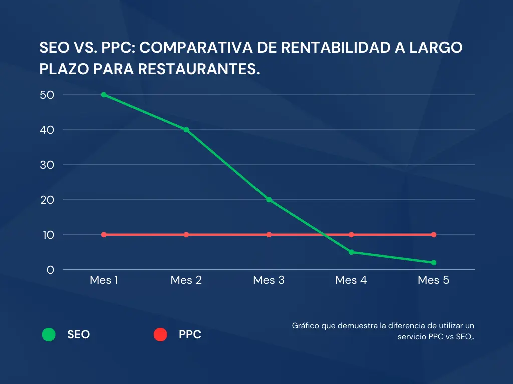

Restaurant SEO: Why is PPC Eating Your Profits?
By: Edson Correa | SEO Engineer | February 18, 2026
The Cost-Per-Click (PPC) Dilemma in the Food Industry

As shown in the analysis above, the difference between both models is critical for a restaurant's financial health:
- PPC (Pay-Per-Click): Generates immediate results but with a constant marginal cost. If the restaurant stops paying, the customer flow disappears instantly.
- SEO (Organic): Requires an initial technical investment (architecture and content optimization), but starting from the third month, the Customer Acquisition Cost (CAC) tends to decrease drastically.
- Sustainability: SEO builds a digital asset that continues to attract diners in Arlington without depending on increasingly expensive ad auctions.
The PPC (Pay-Per-Click) model is often a trap for restaurants with tight average checks. If you pay $1 per click and need 10 clicks for one reservation, your acquisition cost is $10, which can completely wipe out the profit margin of a main course.
How Do We Measure Success?
We don't just look at clicks; we track Business Conversions:
- Direct Calls: Clicks on the call button from Google Maps.
- Direction Requests: Users asking for GPS navigation to your location.
- Direct Bookings: Traffic reaching your website commission-free.
The Alternative: Local SEO Engineering
Local SEO allows your restaurant to appear in the Google Maps Local Pack organically. You don't pay for the click; you pay for the initial technical optimization.
- Relevance: Optimizing for keywords like "Best Mexican food in [City]".
- Authority: Reputation management through reviews and local citations.
- Proximity: The key factor in Google's local algorithm.
Digital Health Checklist: Is Your Restaurant Losing Money?
Use this table to compare your website metrics against Arlington industry standards:
| Critical Metric | Ideal (Google) | Business Impact |
|---|---|---|
| LCP (Largest Contentful Paint) | < 2.5 seconds | Prevents users from bouncing due to slow loading. |
| CLS (Cumulative Layout Shift) | < 0.1 | Avoids misclicks on "Book Now" buttons. |
| SEO Score (Lighthouse) | 90 - 100 | Determines your ranking on Google Maps. |
| Image Optimization | WebP Format | Reduces data usage for mobile customers. |
Geographic Performance Analysis
Our technical audits focus on the Arlington, VA commercial corridor, evaluating network latency and load speeds from key points:
- 🏙️ Ballston-Virginia Square: High mobile traffic density.
- 🏢 Clarendon-Courthouse: Optimized for dinner and nightlife searches.
- 🌳 Rosslyn: Corporate sector speed focus.
- 🛍️ Pentagon City: High Local SEO competition.
Consult the official Google Core Web Vitals guides to understand how these metrics impact your metropolitan ranking.
Recent Findings: Ballston Dining Sector (Q1 2026)
During our latest audits in the Ballston area, we detected that:
- 70% of restaurants have an LCP higher than 4 seconds (Poor).
- Most analyzed websites have a Technical SEO score of 100 but a Performance score under 60.
- There is an average leak of 15% in PPC budgets due to visual instability (CLS).
Local Visibility FAQ
Why doesn't my restaurant show up in top Google Maps results?
Appearing in the Arlington "Local Pack" depends on relevance, distance, and above all, your website's technical authority. If your page is slow or lacks structured data, Google will prioritize the competition.
Is it better to pay for ads or invest in SEO for my Virginia business?
Ads (PPC) are useful for specific events, but SEO offers sustainable organic growth. As shown in the chart above, SEO acquisition costs decrease over time, while ads always cost the same (or more).
What is CLS and how does it affect my online bookings?
Cumulative Layout Shift (CLS) measures visual stability. If a customer tries to tap "Book Now" and the page jumps due to an unoptimized image (common on large chain websites), the customer gets frustrated and leaves.
Strategic Conclusion
Investing in organic traffic is building an asset that works 24/7 with no variable cost, protecting your long-term profitability.
Is Your Arlington Restaurant Losing Customers?
Don't let PPC eat your margins. Let's analyze your Google Maps presence and Local SEO with no obligation.
Request Local SEO Audit*Customized strategy for businesses in Ballston, Clarendon, and surrounding areas.